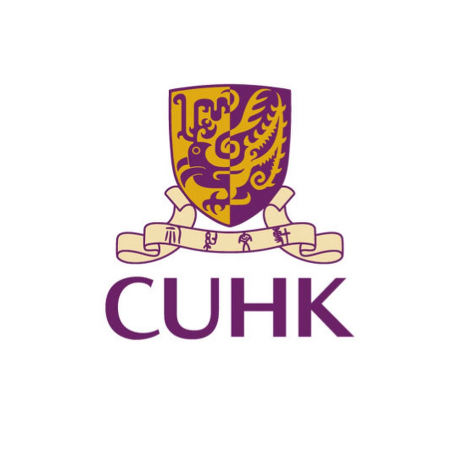

About Me
Hello! I am Evan Wu, an undergraduate student studying Electronic Engineering at The Chinese University of Hong Kong.
My research interests include medical robotics, vision-language-action models, robot perception, robotic endoscopy, and embodied intelligence.
I am currently involved in medical robotics research at CUHK. My work covers multimodal robotic data collection, embedded motor control, endoscopic robot integration, visual tracking, electromagnetic tracking, and vision-language-action model development.
I am particularly interested in intelligent robotic systems for endoscopic navigation, autonomous colonoscopy withdrawal, target tracking, multimodal perception, and clinician-supervised medical intervention.
Education

The Chinese University of Hong Kong
Bachelor of Engineering in Electronic Engineering
Chung Chi College
2024 - Present
Experience
Medical Robotics Research, The Chinese University of Hong Kong
Student Helper
Principal Investigator: Prof. Hongliang Ren
Research Mentor: Mr. Chi Kit Ng
December 2025 - Present
Working on robotic endoscopy, vision-language-action learning, multimodal data collection, motor control, visual tracking, and medical robot system integration.
Additional experience will be added later.
Projects
Publications
-
Publications will be added later.
Awards
Award information will be added later.
Competition, scholarship, or honor will be added later.